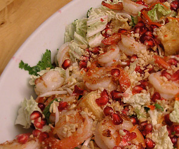

Tofu-Schrimps-Salat nach Rest. Chanthaburi
5 von 6Sojasprossen und Chinakohl in eine Salatschüssel geben. Kerne eines Granatapfels, frische Korianderblätter sowie fein gehackte ungesalzene Erdnüsse dazu geben, alles vermengen. Tofuwürfel frittieren und gut abtropfen. Geschälte Tiger Prawns (Schrimps) scharf anbraten. Beides zum Salat geben und mit Wasser verdünnter Spring Roll Sauce anrichten.
